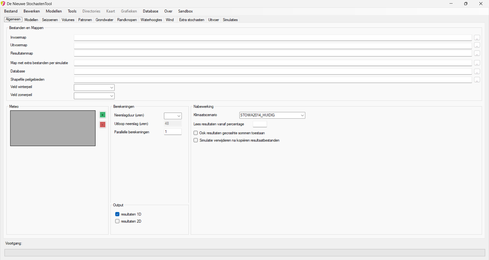

Tabblad Algemeen
Het tabblad ‘Algemeen’ bevat de algemene instellingen voor de stochastenanalyse.

Onderdelen van dit tabblad
Alle onderdelen op dit tabblad worden vastgelegd in het XML-configuratiebestand. Bij het inladen van dit bestand worden de velden op het formulier automatisch gevuld. Het wegschrijven van de configuratie zorgt dat de veldwaarden weer worden weggeschreven naar XML.
Invoermap
De invoermap bevat alle invoerbestanden die benodigd zijn voor de simulaties. Te denken valt aan een submap ‘grondwater’ met daarin de submappen ‘droog’, ‘middeldroog’, ‘middelnat’ en ‘nat’ en in elk van die mappen het modelbestand wat de onderhavige systeemtoestand beschrijft. In het geval van SOBEK en D-Hydro zou dit het unpaved.3b-bestand zijn.
Uitvoermap
De uitvoermap bevat alle modeluitvoer waarvan de modelleur heeft vastgelegd dat die uit de modelschematisatie moeten worden gekopiëerd na completering van de simulatie. Welke bestanden dit zijn legt de modelleur vast op het tabblad ‘Modellen’. De lijst met bestanden komt dan terecht in de database, in de tabel ‘SIMULATIONMODELS’.
In het geval van SOBEK valt te denken aan bestanden als calcpnt.his (bevat waterhoogtes op rekenpunten)en in het geval van D-Hydro aan bestanden als naam_his.nc (bevat resultaten op observation points en kunstwerken) of naam_fou.nc (bevat maximale waterdieptes en -hoogtes voor zowel 1D als 2D).
Resultatenmap
De resultatenmap bevat de uitkomsten van de stochastenanalyse, dus na de statistische nabewerking. In de submappen voor respectievelijk het klimaatscenario en duur komen dan de volgende zaken te staan:
- Een excel-bestand met daarin de overschrijdingswaarden voor iedere locatie
- Een ZIP-file met 1D-resultaten. Dit bestand bevat per 1D-locatie een .csv-bestand
- Een ZIP-file met de 2D-resultaten. Dit bestand bevat per 2D-locatie een .csv-bestand
- Het logbestand van de stochastenanalyse: logfile.txt
Map met extra bestanden per simulatie
Soms is het wenselijk om voor individuele runs in een stochastenanalyse een specifiek invoerbestand mee te geven aan de simulatie. Denk daarbij bijvoorbeeld aan randvoorwaarden die afhankelijk zijn van het neerslagvolume. Of zoals we bij de Geul (Waterschap Limburg) deden: voor iedere combinatie van neerslagvolume en -patroon de uitkomst van een eerder gedraaid HBV-model inkopiëren in de modelcase.
De map die hier wordt opgegeven vormt de plaats waar voor iedere simulatie een eigen submap zal verschijnen. Dit gebeurt nadat de gebruiker op het tabblad ‘Simulaties’ op ‘Samenstellen’ heeft geklikt. Het staat de gebruiker vervolgens vrij om, voorafgaand aan het opbouwen van de simulaties, in elke map de gewenste modelbestanden te kopiëren. Deze modelbestanden worden dan automatisch meegenomen bij het opstellen van de simulatie.
Het is zelfs mogelijk om in iedere map deelmappen te maken en daar de bestanden in te zetten. Dit kan nodig zijn bij bijv. simulaties met D-Hydro waar de flow-bestanden vaak in een submap flowfm zitten.
Database
In het veld ‘database’ wordt verwezen naar de SQLite-database (.db) van het onderhavige project. Deze database is cruciaal voor een stochastenanalyse want hij bevat de diverse stochasten en hun kanstoedeling alsmede de berekende overschrijdingswaarden. Als bij aanvang een database ontbreekt, kan de gebruiker er één vervaardigen middels het menu ‘Database’ - ‘Nieuwe database creëren’.
Shapefile peilgebieden
Dit veld is optioneel. Door streefpeilen op te geven wordt extra context toegevoegd aan de overschrijdingsgrafieken: waterhoogtes worden dan geplot binnen de context van de streefwaterstanden zodat de mate van overschrijding in één oogopslag duidelijk wordt.
Veld winterpeil en Veld zomerpeil
Als de gebruiker een shapefile met streefpeilen heeft opgegeven dient hij hier te selecteren welk veld resp. winterstreefpeil en zomerstreefpeil bevat.
Meteo
Door op de <+> button te drukken voegt de gebruiker een nieuw meteo-station toe ten behoeve van de simulaties. Ieder station heeft drie kenmerken die moeten worden opgegeven:
- Naam: naam van het meteo-station
- Soort: het soort meteo-station (neerslag of verdamping)
- ARF: de gebiedsreductiefactor (Area Reduction Factor). Een factor waarmee we compenseren dat statistieken van een puntbron (lees: neerslagstation) worden toegepast op een oppervlak. Zie voor meer informatie (STOWA 2019). Zelf de gebiedsreductiefactor berekenen kan op Meteobase.
Berekeningen
Geef hier de gewenste duur van de hydrologische gebeurtenissen op. Er is keuze uit de standaardduren van STOWA: 24 uur, 48 uur, 96 uur, 192 uur en 216 uur. Soms komt het voor dat maximale waterstanden iets na de gebeurtenis optreden. Daarom is het mogelijk om de gebeurtenissen uit te breiden met een uitloopperiode.
De optie “aantal parallelle berekeningen” is komen te vervallen.
Output
Hier kan de gebruiker aangeven van welke module(s) de output moet worden nabewerkt tot overschrijdingsgrafieken. Op dit moment worden alleen 1D en/of 2D ondersteund.
Nabewerking
Onder het kopje ‘nabewerking’ kiest de gebruiker het klimaatscenario. Hoe de overschrijdingsgrafieken uitpakken is afhankelijk van welke kansen het gekozen klimaatscenario toekent aan iedere doorgerekende gebeurtenis.
Om te voorkomen dat ten onrechte de initiële toestand als ‘hoogste waarde tijdens de simulatie’ wordt aangemerkt, is het mogelijk om bij het uitlezen van de rekenresultaten een eerste percentage van het resultaat te negeren. Dit gebeurt onder de optie ‘lees resultaten vanaf percentage’. dus als de gebruiker hier 10 invult, worden uit het resultaat alleen de laatste 90% van de resultaatreeksen gebruikt om het maximum op te zoeken.
De optie ‘ook resultaten gecrashte sommen toestaan’ is op dit moment niet operationeel.